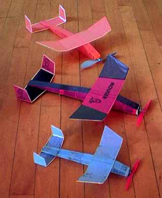

|  |
We must give credit where credit is due! The model on top/in back was built by John Carlson, the other two were built by George Benson.
Of note, though hard to see, is that George's large red and black model has some rather fancy markings photocopied onto the tissue. Both fins sport a line drawing of Garfield, and the top of the wing adds the title "Mouser" as well. Yeah, the tail is warped, likely due to improper storage. George's blue model in the foreground is a reduced size Pussycat, built to a wingspan of 8". Even at this size, the design holds up and flies extremely well.
Copyright 1998, Thayer Syme. All rights reserved |